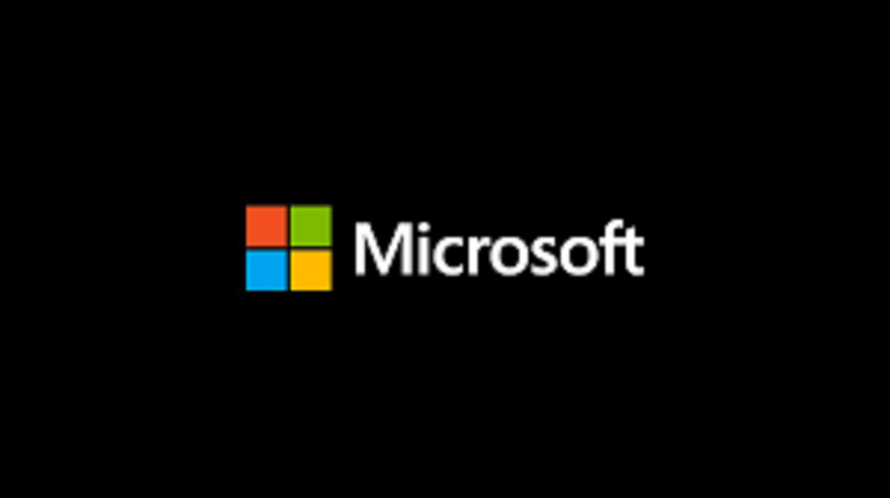

Információk a cégről és a történelme

A 92-es számú épület a cég telephelyén
A Windows története 1981-ig nyúlik vissza, amikor a Microsoft elkezdett dolgozni az "Interface
Manager" nevű programon. 1983 novemberében jelentették be (az Apple Lisa után , de a Macintosh
előtt ) "Windows" néven, de a Windows 1.0 csak 1985 novemberében jelent meg. A Windows 1.0-nak
az Apple operációs rendszerével kellett versenyeznie, de csekély népszerűségre tett csak szert.
A Windows 1.0 nem teljes operációs rendszer; inkább kiterjeszti az MS-DOS-t . A Windows 1.0
rendszerhéja egy MS-DOS Executive néven ismert program . Tartalmazza a számológépet, a naptárat,
a kártyafájlt és a vágólapnézegetőt, Óra, Vezérlőpult, Jegyzettömb, Paint , Reversi , Terminál
és Write. A Windows 1.0 nem engedélyezi az egymást átfedő ablakokat. Ehelyett minden ablak
csempézett. Csak modális párbeszédpanelek jelenhetnek meg a többi ablak fölött.
A Windows 2.0 1987 decemberében jelent meg, és népszerűbb volt, mint elődje. Számos fejlesztést
tartalmaz a felhasználói felület és a memóriakezelés terén. A Windows 2.03 megváltoztatta az
operációs rendszert csempézett ablakokról egymást átfedő ablakokra. A változás eredményeként az
Apple Computer keresetet nyújtott be a Microsoft ellen az Apple szerzői jogainak állítólagos
megsértése miatt (a bíróság végül a Microsoft javára döntött 1993-ban). A Windows 2.0
kifinomultabb billentyűparancsokat is bevezetett, és kibővített memóriát is használhatott.
A Windows 2.1 két különböző verzióban jelent meg: Windows/286 és Windows/386 . A Windows/386 az Intel 80386 virtuális 8086-os módját használja több DOS-program többfeladatos kezelésére, a lapozott memória modellt pedig a bővített memória emulálására a rendelkezésre álló bővített memória használatával . A Windows/286 a neve ellenére Intel 8086 és Intel 80286 processzorokon is fut. Valós módban fut , de képes kihasználni a nagy memóriaterületet.
A teljes Windows-csomagokon kívül voltak csak futásidejű verziók, amelyeket harmadik felek korai Windows-szoftverekkel szállítottak, és lehetővé tették Windows-szoftverek MS-DOS-on való futtatását, a teljes Windows-szolgáltatáskészlet nélkül.
A Windows 2.1 két különböző verzióban jelent meg: Windows/286 és Windows/386 . A Windows/386 az Intel 80386 virtuális 8086-os módját használja több DOS-program többfeladatos kezelésére, a lapozott memória modellt pedig a bővített memória emulálására a rendelkezésre álló bővített memória használatával . A Windows/286 a neve ellenére Intel 8086 és Intel 80286 processzorokon is fut. Valós módban fut , de képes kihasználni a nagy memóriaterületet.
A teljes Windows-csomagokon kívül voltak csak futásidejű verziók, amelyeket harmadik felek korai Windows-szoftverekkel szállítottak, és lehetővé tették Windows-szoftverek MS-DOS-on való futtatását, a teljes Windows-szolgáltatáskészlet nélkül.
Az 1990-ben kiadott Windows 3.0 javította a rendszer felépítését, főként a virtuális memória és
a betölthető virtuális eszközillesztő-programok ( VxD ) segítségével, amelyek lehetővé teszik a
Windows számára, hogy tetszőleges eszközöket osszon meg a DOS-alkalmazások között. A Windows 3.0
alkalmazások védett módban futhatnak, ami több megabájt memóriához biztosít hozzáférést a
szoftveres virtuális memória sémában való részvétel kötelezettsége nélkül. Ugyanabban a
címtérben futnak, ahol a szegmentált memória bizonyos fokú védelmet nyújt. A Windows 3.0 a
felhasználói felületet is javította. A Microsoft a kritikus műveleteket C -ről assembly-be írta
át. A Windows 3.0 volt a Windows első verziója, amely széles körű kereskedelmi sikert ért el, és
az első hat hónapban 2 millió példány kelt el belőle.
A Windows 95 előtti verziókat a végfelhasználóknak hajlékonylemezről kellett telepíteniük (vagy hálózati telepítéssel rendelkező professzionális környezetben); itt Windows for Workgroups kilenc 3,5 hüvelykes lemezzel, amelyeket egymás után kell behelyezni.
Az 1992. március 1-jén általánosan elérhetővé tett Windows 3.1 arculatváltást kapott. 1993 augusztusában jelent meg a Windows for Workgroups, egy speciális verzió, integrált peer-to-peer hálózati szolgáltatásokkal és 3.11-es verziószámmal. Windows 3.1-el együtt adták el. A Windows 3.1 támogatása 2001. december 31-én megszűnt.
Az 1994-ben kiadott Windows 3.2 a Windows 3.1 kínai verziójának frissített változata. A frissítés erre a nyelvi verzióra korlátozódott, mivel csak a kínai nyelv összetett írásrendszerével kapcsolatos problémákat javította. A Windows 3.2-t a számítógépgyártók általában az MS-DOS tízlemezes verziójával árulták, amely egyszerűsített kínai karaktereket is tartalmazott az alapkimenetben, valamint néhány lefordított segédprogramot.
A Windows 95 előtti verziókat a végfelhasználóknak hajlékonylemezről kellett telepíteniük (vagy hálózati telepítéssel rendelkező professzionális környezetben); itt Windows for Workgroups kilenc 3,5 hüvelykes lemezzel, amelyeket egymás után kell behelyezni.
Az 1992. március 1-jén általánosan elérhetővé tett Windows 3.1 arculatváltást kapott. 1993 augusztusában jelent meg a Windows for Workgroups, egy speciális verzió, integrált peer-to-peer hálózati szolgáltatásokkal és 3.11-es verziószámmal. Windows 3.1-el együtt adták el. A Windows 3.1 támogatása 2001. december 31-én megszűnt.
Az 1994-ben kiadott Windows 3.2 a Windows 3.1 kínai verziójának frissített változata. A frissítés erre a nyelvi verzióra korlátozódott, mivel csak a kínai nyelv összetett írásrendszerével kapcsolatos problémákat javította. A Windows 3.2-t a számítógépgyártók általában az MS-DOS tízlemezes verziójával árulták, amely egyszerűsített kínai karaktereket is tartalmazott az alapkimenetben, valamint néhány lefordított segédprogramot.
1995-ben megjelent a Windows 95, amely rengeteg újítást hozott magával: A tálca, a Start menü,
az asztalra helyezhető ikonok megjelenése, későbbi verzióknál pedig opcionálissá vált az
Internet Explorer webböngésző telepítése is. A 95-től örökölt meg mindent a Windows 98, ezen
kívül még több újítást tartalmazott: Dokumentumok mappa első megjelenése, az Internet Explorer
egybe integrálása az operációs rendszerrel és az Active Desktop megjelenése (a
rendszerkövetelmény ennek köszönhetően megnőtt és eltávolítani sem lehetséges különleges
programok nélkül, ezt sokan kritizálták, de könnyebb navigációt biztosított mappák és fájlok
között). A második kiadása, a Windows 98SE (Second Edition) volt igazán sikeres, és nem egy régi
számítógépen a mai napig fellelhető. 2000-ben jelent meg a Windows 2000, amely habár a 95/98
névsémát használta, NT alapú volt és cégeknek készült. A Windows Me (Millennium Edition) csak
rövid ideig volt kapható sikertelenségének köszönhetően, képes volt a Windows-rendszerfájlok
védelmére és illetéktelen módosítás után a visszaállításukra, ennek ellenére az operációs
rendszert rengeteg kritika érte a stabilitási problémák miatt, amely főleg a rossz
hardvertámogatásnak (mind a gyártóktól, mind a Microsofttól), a rosszul megírt programoknak,
illetve a DOS alapú Windows rendszer elavultságának volt köszönhető, ezt még a Microsoft is
elismerte
1988 novemberében a Microsofton belüli új fejlesztőcsapat (amelyben a Digital Equipment
Corporation korábbi fejlesztői, Dave Cutler és Mark Lucovsky is részt vett) megkezdte az IBM és
a Microsoft OS/2 operációs rendszerének "NT OS/2" néven ismert, felújított változatának
kidolgozását . Az NT OS/2-t egy biztonságos, többfelhasználós operációs rendszernek szánták
POSIX- kompatibilis, valamint egy moduláris, hordozható kernellel , megelőző többfeladatos
kezeléssel és több processzorarchitektúra támogatásával. A Windows 3.0 sikeres megjelenése után
azonban, az NT fejlesztőcsapata úgy döntött, hogy átdolgozza a projektet úgy, hogy az OS/2
helyett a Windows API Win32 néven ismert kiterjesztett 32 bites portot használja. A Win32 a
Windows API-khoz hasonló struktúrát tartott fenn (lehetővé teszi a meglévő Windows alkalmazások
egyszerű portolását a platformra), de támogatta a meglévő NT kernel képességeit is. A Microsoft
munkatársai általi jóváhagyást követően a fejlesztés folytatódott a mai Windows NT-n, a Windows
első 32 bites verzióján. Az IBM azonban kifogásolta a változtatásokat, és végül önállóan
folytatta az OS/2 fejlesztését.
A Windows NT volt az első hibrid kernelen alapuló Windows operációs rendszer. A hibrid kernelt módosított mikrokernelnek tervezték, amelyet a Richard Rashid által a Carnegie Mellon Egyetemen kifejlesztett Mach mikrokernel befolyásolt, de nem felelt meg a tiszta mikromag összes kritériumának.
Az így létrejött operációs rendszer első kiadása, a Windows NT 3.1 (amely a Windows 3.1- hez társult) 1993 júliusában jelent meg, asztali munkaállomásokhoz és szerverekhez való verziókkal. A Windows NT 3.5 1994 szeptemberében jelent meg, a teljesítmény javítására és a Novell NetWare támogatására összpontosítva , majd 1995 májusában a Windows NT 3.51 követte , amely további fejlesztéseket és a PowerPC architektúra támogatását is magában foglalta . A Windows NT 4.0 1996 júniusában jelent meg, amely bemutatja a Windows 95 újratervezett felületétaz NT sorozathoz. 2000. február 17-én a Microsoft kiadta a Windows 2000 rendszert , az NT 4.0 utódját. A Windows NT nevet ezen a ponton elvetették, hogy nagyobb hangsúlyt helyezzenek a Windows márkára.
A Windows NT volt az első hibrid kernelen alapuló Windows operációs rendszer. A hibrid kernelt módosított mikrokernelnek tervezték, amelyet a Richard Rashid által a Carnegie Mellon Egyetemen kifejlesztett Mach mikrokernel befolyásolt, de nem felelt meg a tiszta mikromag összes kritériumának.
Az így létrejött operációs rendszer első kiadása, a Windows NT 3.1 (amely a Windows 3.1- hez társult) 1993 júliusában jelent meg, asztali munkaállomásokhoz és szerverekhez való verziókkal. A Windows NT 3.5 1994 szeptemberében jelent meg, a teljesítmény javítására és a Novell NetWare támogatására összpontosítva , majd 1995 májusában a Windows NT 3.51 követte , amely további fejlesztéseket és a PowerPC architektúra támogatását is magában foglalta . A Windows NT 4.0 1996 júniusában jelent meg, amely bemutatja a Windows 95 újratervezett felületétaz NT sorozathoz. 2000. február 17-én a Microsoft kiadta a Windows 2000 rendszert , az NT 4.0 utódját. A Windows NT nevet ezen a ponton elvetették, hogy nagyobb hangsúlyt helyezzenek a Windows márkára.
A Windows NT következő nagyobb verziója, a Windows XP 2001. október 25-én jelent meg. A Windows
XP bevezetésének célja a fogyasztó-orientált Windows 9x sorozat és a Windows NT által bevezetett
architektúra egyesítése volt, amely változás a Microsoft ígérete szerint jobb lesz.
teljesítménye a DOS-alapú elődeihez képest. A Windows XP ezenkívül egy újratervezett
felhasználói felületet (beleértve a frissített Start menüt és a "feladat-orientált" Windows
Intézőt), egyszerűsített multimédiás és hálózati funkciókat, az Internet Explorer 6-ot, a
Microsoft .NET Passport szolgáltatásaival való integrációt, valamint a " kompatibilitási módot "
is bevezetné. segít a visszafelé kompatibilitás biztosításábana Windows korábbi verzióihoz
tervezett szoftverrel és a Távsegítség funkcióval.
A kiskereskedelemben a Windows XP-t két fő kiadásban forgalmazták : a "Home" kiadás a fogyasztókat célozta meg, míg a "Professional" kiadás az üzleti környezeteket és a hatékony felhasználókat célozta meg , és további biztonsági és hálózati funkciókat tartalmazott. Az otthoni és a professzionális verziót később a "Media Center" kiadás kísérte ( házi mozi PC- kre tervezték , különös tekintettel a DVD- lejátszás támogatására, a TV-tuner-kártyákra , a DVR- funkciókra és a távirányítókra), valamint a "Tablet PC"-re (tervezve). a táblaszámítógépre vonatkozó előírásoknak megfelelő mobileszközökhöz , érintőceruzávaltollbevitel és további tollal használható alkalmazások). [34] [35] [36] A Windows XP általános támogatása 2009. április 14-én ért véget. A kiterjesztett támogatás 2014. április 8-án ért véget.
A Windows 2000 után a Microsoft a szerver operációs rendszerek kiadási ütemezését is megváltoztatta; a Windows XP szerver megfelelője, a Windows Server 2003 2003 áprilisában jelent meg. 2005 decemberében a Windows Server 2003 R2 követte.
A kiskereskedelemben a Windows XP-t két fő kiadásban forgalmazták : a "Home" kiadás a fogyasztókat célozta meg, míg a "Professional" kiadás az üzleti környezeteket és a hatékony felhasználókat célozta meg , és további biztonsági és hálózati funkciókat tartalmazott. Az otthoni és a professzionális verziót később a "Media Center" kiadás kísérte ( házi mozi PC- kre tervezték , különös tekintettel a DVD- lejátszás támogatására, a TV-tuner-kártyákra , a DVR- funkciókra és a távirányítókra), valamint a "Tablet PC"-re (tervezve). a táblaszámítógépre vonatkozó előírásoknak megfelelő mobileszközökhöz , érintőceruzávaltollbevitel és további tollal használható alkalmazások). [34] [35] [36] A Windows XP általános támogatása 2009. április 14-én ért véget. A kiterjesztett támogatás 2014. április 8-án ért véget.
A Windows 2000 után a Microsoft a szerver operációs rendszerek kiadási ütemezését is megváltoztatta; a Windows XP szerver megfelelője, a Windows Server 2003 2003 áprilisában jelent meg. 2005 decemberében a Windows Server 2003 R2 követte.
Hosszas fejlesztési folyamat után a Windows Vista 2006. november 30 - án jelent meg mennyiségi
licencelésre, 2007. január 30-án pedig fogyasztók számára. Számos új funkciót tartalmazott , az
újratervezett héjtól és felhasználói felülettől kezdve a jelentős műszaki változtatásokig ,
különös tekintettel a biztonsági funkciókra . Számos különböző kiadásban volt elérhető, és
számos kritika érte , mint például a teljesítmény csökkenése, a hosszabb rendszerindítási idő,
az új UAC kritikája és a szigorúbb licencszerződés. A Vista szerver megfelelője, a Windows
Server 2008 2008 elején jelent meg.
2009. július 22-én a Windows 7 és a Windows Server 2008 R2 gyártási (RTM) kiadásra került, majd
3 hónappal később, 2009. október 22-én adták ki a nyilvánosság számára. Elődjétől, a Windows
Vistától eltérően, amely számos új szolgáltatást vezetett be, A Windows 7-et a Windows
termékcsalád célzottabb, fokozatos frissítésének szánták, azzal a céllal, hogy kompatibilis
legyen azokkal az alkalmazásokkal és hardverekkel, amelyekkel a Windows Vista már kompatibilis
volt. A Windows 7 többérintéses támogatással rendelkezik, egy újratervezett Windows shell
frissített tálcával, felfedhető ugrási listákkalamelyek parancsikonokat tartalmaznak az adott
alkalmazásokkal gyakran használt fájlokhoz, valamint parancsikonokat az alkalmazáson belüli
feladatokhoz, a HomeGroup nevű otthoni hálózati rendszerhez, és teljesítményjavításokat.
A Windows 8 , a Windows 7 utódja általában 2012. október 26-án jelent meg. A Windows 8-on számos
jelentős változtatást hajtottak végre, beleértve a Microsoft Metro tervezési nyelvén alapuló
felhasználói felület bevezetését, amely optimalizálja az érintésalapú eszközökhöz, például
táblagépekhez és többfunkciós számítógépekhez. Ezek a változtatások magukban foglalják a Start
képernyőt, amely nagyméretű csempéket használ, amelyek kényelmesebbek az érintéssel történő
interakcióhoz, és lehetővé teszik a folyamatosan frissülő információk megjelenítését, valamint
az alkalmazások új osztályát, amelyeket elsősorban érintésalapú eszközökön való használatra
terveztek. Az új Windows-verzió legalább 1024×768 pixeles felbontást igényelt, gyakorlatilag
alkalmatlanná teszi a 800×600 pixeles képernyővel rendelkező netbookokhoz .
A további változtatások közé tartozik a felhőszolgáltatásokkal és más online platformokkal (például közösségi hálózatokkal , a Microsoft saját OneDrive- jával (korábban SkyDrive) és Xbox Live- szolgáltatásaival) való fokozott integráció , a Windows Store szoftverterjesztési szolgáltatás, valamint a Windows RT néven ismert új változat , amelyet Az ARM architektúrát használó eszközök és egy új billentyűparancs a számára a képernyőképekhez. A Windows 8 frissítését, a Windows 8.1-et, 2013. október 17-én adták ki, és olyan funkciókat tartalmaz, mint az új élő csempeméretek, a mélyebb OneDrive integráció és sok más változat. A Windows 8 és Windows 8.1 rendszert számos kritika érte, például a Start menü eltávolítása miatt .
A további változtatások közé tartozik a felhőszolgáltatásokkal és más online platformokkal (például közösségi hálózatokkal , a Microsoft saját OneDrive- jával (korábban SkyDrive) és Xbox Live- szolgáltatásaival) való fokozott integráció , a Windows Store szoftverterjesztési szolgáltatás, valamint a Windows RT néven ismert új változat , amelyet Az ARM architektúrát használó eszközök és egy új billentyűparancs a számára a képernyőképekhez. A Windows 8 frissítését, a Windows 8.1-et, 2013. október 17-én adták ki, és olyan funkciókat tartalmaz, mint az új élő csempeméretek, a mélyebb OneDrive integráció és sok más változat. A Windows 8 és Windows 8.1 rendszert számos kritika érte, például a Start menü eltávolítása miatt .
2014. szeptember 30-án a Microsoft bejelentette a Windows 10-et a Windows 8.1 utódját. 2015.
július 29-én jelent meg, és orvosolja a Windows 8 rendszerrel először bemutatott felhasználói
felület hiányosságait. A PC-n végrehajtott változtatások közé tartozik a Start menü, a virtuális
asztali rendszer visszatérése, valamint a Windows Store-alkalmazások Windowson belüli
futtatásának lehetősége a számítógépen. asztalon, nem pedig teljes képernyős módban.
2017 februárjában a Microsoft bejelentette Windows forráskód-tárházának áttelepítését a Perforce-ról a Gitre . Ez az áttelepítés 3,5 millió különálló fájlt tartalmazott egy 300 gigabájtos tárolóban. [51] 2017 májusára a mérnöki csapat 90 százaléka Git-et használt, naponta körülbelül 8500 véglegesítés és 1760 Windows build során.
2021 júniusában, nem sokkal azelőtt, hogy a Microsoft bejelentette volna a Windows 11-et, a Microsoft frissítette a Windows 10 életciklus-szabályzati oldalait, és felfedte, hogy a Windows 10 utolsó kiadásának támogatása 2025. október 14-én megszűnik.
2017 februárjában a Microsoft bejelentette Windows forráskód-tárházának áttelepítését a Perforce-ról a Gitre . Ez az áttelepítés 3,5 millió különálló fájlt tartalmazott egy 300 gigabájtos tárolóban. [51] 2017 májusára a mérnöki csapat 90 százaléka Git-et használt, naponta körülbelül 8500 véglegesítés és 1760 Windows build során.
2021 júniusában, nem sokkal azelőtt, hogy a Microsoft bejelentette volna a Windows 11-et, a Microsoft frissítette a Windows 10 életciklus-szabályzati oldalait, és felfedte, hogy a Windows 10 utolsó kiadásának támogatása 2025. október 14-én megszűnik.
2021. június 24-én a Windows 11 a Windows 10 utódja. Az új operációs rendszert úgy tervezték,
hogy felhasználóbarátabb és érthetőbb legyen. 2021. október 5-én jelent meg. 2022 májusától a
Windows 11 ingyenes frissítés a Windows 10 azon felhasználók számára, akik megfelelnek a
vitatott szükségességű rendszerkövetelményeknek.